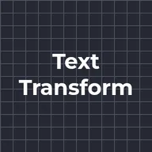
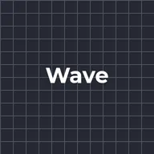
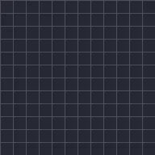

Transformação de texto

Move, escala, gira, desvanece e tinge letras, palavras ou linhas dentro de um intervalo. A âncora define se a escala e a rotação usam cada componente ou o centro da camada. Mova o intervalo com o deslocamento para fazer a mudança percorrer o texto.
Text Transform move, escala, gira, esmaece e colore letras, palavras ou linhas. Defina o que deve acontecer com as partes afetadas (Position, Scale, Rotation, Opacity, Tint) e depois anime Offset para fazer a mudança percorrer o texto do início ao fim. As predefinições Wave e Spin Cascade são bons pontos de partida.
Configurações
| Configuração | Tipo | Intervalo | Padrão |
|---|---|---|---|
| Com base em | Opção | Caractere, Palavra, Linha | Caractere |
| Âncora | Opção | Componente, Camada | Componente |
| Início | Número | 0% a 100% | 0% |
| Fim | Número | 0% a 100% | 100% |
| Deslocamento | Número | -200% a 200% | 0% |
| Forma | Opção | Quadrado, Rampa crescente, Rampa decrescente, Triângulo, Arredondado, Suave | Quadrado |
| Suavidade | Número | 0% a 100% | 0% |
| Posição | Ponto (X, Y) | -4000 px a 4000 px | 0 px, 0 px |
| Escala | Número | 0% a 1000% | 100% |
| Rotação | Ângulo | -3600° a 3600° | 0° |
| Opacidade | Número | 0% a 100% | 100% |
| Tingir | Cor | – | #FFFFFF, 0% opaco |
| Ordem aleatória | Ativado ou desativado | – | Desativado |
| Semente | Número | 0 a 1000 | 1 |
Predefinições
Escolha uma na página de detalhes do efeito na Biblioteca de Efeitos. Cada uma é uma configuração pronta que você pode continuar editando.

Onda
Cascata giratória